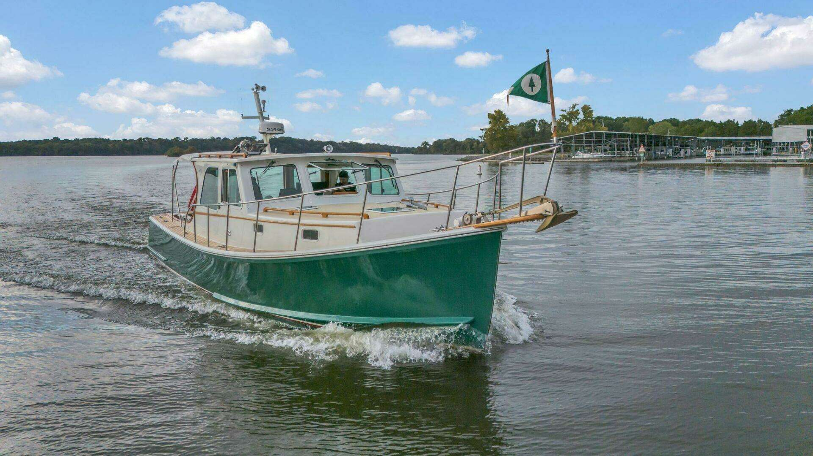

B-Atlas Boat Guide · DUFF-35
Duffy 35 Downeast / Lobsterboat Hull
1982–2005
The Duffy 35 is a Spencer Lincoln-influenced Maine lobster-boat hull used for commercial and recreational Downeast builds. Unlike a tightly standardized production cruiser, individual Duffy hulls may be finished by different yards or owners, so layout, machinery, tankage and accommodations can vary substantially.

- LOA
- 35′ 1″ / 10.69 m
- LWL
- 33′ 4″ / 10.16 m
- Beam
- 11′ 11″ / 3.63 m
- Draft
- 3′ 3″ / 0.99 m
- Hull behaviour
- Semi-Displacement
- Fuel
- Diesel
- Propulsion
- Shaft
- Engine configuration
- Single diesel inboard typical; horsepower and installation vary by finish
- Boat family
- Downeast
- Construction
- Fiberglass
Best for
- Experienced buyers wanting a genuine Maine lobster-boat hull
- Owners prioritizing sea-kindly coastal operation and cockpit utility
- Buyers comfortable evaluating a custom or semi-custom finish
Trade-offs
- Hull-specific finish quality and equipment vary substantially
- Published tankage, displacement and accommodation figures may describe one custom build rather than the hull standard
- Cruising amenities depend heavily on who completed the boat
Known concerns
- No model-specific concern has been promoted to B-Atlas’s evidence threshold. This does not mean the model has no age-, condition- or hull-specific risks.
Inspection focus
- Identify the hull builder and finishing yard for the individual boat
- Inspect bulkhead, deck and house attachment quality and any later modifications
- Inspect engine beds, shaft alignment, exhaust and cooling installation
- Verify tank materials, capacities and installation access
- Verify actual displacement, bridge clearance and accommodations rather than relying on model averages
Continue researching
Related boat models
Duffy 37 Downeast / Lobsterboat Hull
37 ft · Semi-Displacement
Duffy 31 Downeast / Lobsterboat Hull
31 ft · Semi-Displacement
Duffy 39 Extended Duffy 37 / Custom Downeast
39 ft · Semi-Displacement
Duffy 29 Downeast Hull
29 ft · Semi-Displacement
Duffy 42 Downeast / Lobsterboat Hull
42 ft · Semi-Displacement
Back Cove 33 Downeast Cruiser
34.67 ft · Planing
About this record
B-Atlas preserves uncertainty: missing information remains unknown rather than being treated as a negative. Specifications and guidance describe the model record; individual boats can differ by year, equipment, refit and condition.